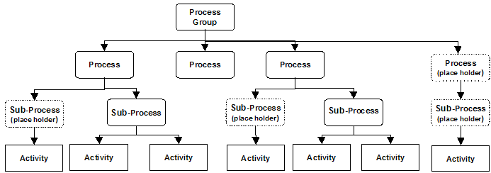

| Artifact: Process Identification
(BUS 312)
|
|
 |
| The Process Identification work product identifies and describes the processes necessary to execute the organization’s business at the organizational, operational or transactional levels depending upon the requirements of the project. |
Domains: Business Process
Work Product Kinds: Inventory |
|
Purpose
This work product is produced for one or more of the following:
-
To identify and describe the processes in the scope of the project at any level from Enterprise processes to
activity level
-
To provide overall context and understanding of the business
-
To assist in relating business strategy to affected business processes
-
To assist in gaining executive agreement to the scope and boundaries
-
To group the related process steps to enterprise processes, process groups and/or sub-processes
-
If the project is restricted to a specific business process, the purpose would be to identify the sub processes
that will be in or out of scope of the project
-
To provide the enterprise process view of a Business Model
-
To provide the basis for sizing the effort required to understand and assess the current environment and/or
redesign the future environment
-
To provide a foundation for process management, including assignment of process ownership
-
To identify the skills, knowledge and background required in the project team
|
Relationships
| Parent Deliverables |
|
| Roles | Responsible:
| Modified By:
|
| Tasks | Input To:
| Output From:
|
Description
| Main Description |
This work product represents:
-
A stable view of the processes at the appropriate levels
-
An identification and description of the processes
-
An identification of the relationships between the processes
The characteristics of a process are that it:
-
Has a definite start and end
-
Produces a discernible output that has value
-
Is described in verb / object format
-
Represents "what" is done not "how" it is done
|
| Notation |
The level of detail in which you describe a process is roughly equivalent to the performer level that is being
considered. You can use the different levels of performers to roll up measurements from the lowest individual level to
the whole Enterprise. A Performer represents the person, organization, or system performing the work in a process flow.
Processes can be identified or described at any of the following levels:
Based on performer level, we can group process models into three general levels of elaboration:
-
Inter-organizational — A high-level view of the key business processes. Organizational units perform
these processes. You can use two process models to represent this view. The Decomposition diagram logically groups
the lower-level processes into key business processes. The Process Flow diagram depicts the relationship between
the organizational units as work flows through business units. You can align the organizational units either by
function or by process based on the actual or desired organization. The hierarchy of levels within this performer
view is important because it serves as the basis for rolling up the process measurements. Typically this Work
Product Description is used.
-
Operational — A more detailed view of a process, describing the work flows between individuals
involved in the process. Use the Activity Flow diagram to represent operational processes with the appropriate
narratives.Typically the process definition work product is used.
-
Transactional — A low-level view of the work performed by each of the individuals within the process.
You should depict this to a level of detail sufficient to train people and develop the corresponding technology.
The Activity model, which is typically in the form of a table, can represent this detailed view showing the tasks
an individual performs with associated links to technology and data.
The following table aligns the process decomposition classification with the process elaboration by performer. You
should align your documentation with the Process categories and treat all of the processes within a Performer level
identically for the sake of consistency.
The business processes can be represented in a number of ways, depending on the nature of the engagement and
requirements of the client. In most of the cases a combination of a graphical representation and a textual description
of the process is used.
Processes may be represented as:
-
Process Hierarchy Diagram (Process Decomposition)
-
Block Diagrams
-
Value Chain Charts
-
List
-
Process Narratives
Each of the above is described in more detail in the example guidance.
Process Decomposition: During the initial phases of an engagement when the effort is aimed at understanding
either the current processes or future process requirements, the process decomposition technique is an effective way of
describing processes.
Decomposition Diagram with Activities at multiple levels
Another way is to create placeholder Processes with special notation so all processes have the same number of levels.
Process Decomposition Diagram with placeholder processes

A narrative that defines its processes and activities supports each process decomposition diagram.
Process Narratives
The Process Narrative documents and describes the detail characteristics of the process and captures additional
information to support the graphical representation of the process models (decomposition and flow views). The process
narratives are typically documented at the sub-process level for each process, and describe the steps or activities
performed by the sub-process. The standard notation for the Process Narrative Description is captured using a text
table with the following information:
-
Process Name – the name of the process
-
Process Level
-
Process Description – a narrative description of the overall process and its purpose in sufficient detail
that a reader familiar with the subject area can grasp the nature of the process.
-
Name of Parent Process
-
Input – a listing / description of each resource, asset used/consumed, or triggering event of the process
-
Steps – a brief description of each process steps of the defined process
-
Output - the outputs, result, or end event of the process step/activity
-
Issues – documents any identified issues, constraints, concerns on the process
-
Opportunities – documents any potential process improvement opportunities that were identified during the
identification and modeling of the processes
-
Capability – specifies the strategic capabilities the process is supposed to enable (or realize) – current
as well as future.
|
Illustrations
Key Considerations
Some critical success factors for developing this work product include:
-
Stay at as high a level as possible. Do not waste time developing detailed process models or detailed
descriptions at this point (include just enough description so people can agree on the boundaries and distinguish
one process from another).
-
Ensure that the differences between business management functions and processes are understood by IBM and the
client.
-
The number of businesses' processes should be around twenty to twenty five (if covering the entire enterprise) or
between six and twelve (if covering the day-to-day business operations area) to achieve the right level of
granularity.
-
Ensure a reasonably high level of consensus exists among client participants relative to the process names,
descriptions, etc.
-
Identify potential sources of information before any client workshop, e.g., ICM database, ISU "files", subject
matter experts, competency networks; and through literature searches - competitive intelligence library at Mt.
Pleasant, NY, Industry benchmark databases, industry consortiums, infogate, internet, etc; and within the client's
organization in the form of prior work, operating guidelines, ISO or TQM documentation, etc.
-
Prepare a "straw model" of the processes/descriptions to be defined in the workshop. This is a useful
technique to ensure proper preparation and insight into the workshop focus area.
-
Whenever possible, start with a generic or industry standard process model (even if the client has his own model)
to minimize development time and/or use as a benchmark for completeness and clarity.
-
Try to identify and involve the client's "process architect" or a fairly high level staff manager with broad
knowledge of the client's business (who also understands business processes) to represent an objective view of the
processes.
Major Dependencies:
-
Client contact(s) with broad understanding of the business from a process perspective.
-
Involvement of client, vendor or IBM personnel with a general knowledge of the selected package's functional
capabilities (if applicable).
-
Knowledge of client's key business goals/objectives, customer imperatives and/or business process performance
issues.
|
Tailoring
| Impact of not having |
If this work product is not produced, then:
-
It will be difficult to scope the engagement, with a likely consequence of ambiguity about the scope and boundaries
of the project, leading to "scope creep" and difficulties in managing the project
-
It will not be possible to size the project effort
-
It will not be possible to assign work to the project team
-
Responsibility and accountability for the performance of each process will be ill-defined
-
Responsibility and accountability for the implementation of process changes will be difficult to establish and
assign
The long-range impacts to the client include:
-
Lost opportunity to provide a process management foundation required for effective business process change
-
Lack of understanding of what it means to redesign and manage by process
-
Reduction in the likelihood of sustainable results from the redesign
|
| Reasons for not needing |
There are very few instances when this work product is not required, possibly when the process identification
activities have been performed in prior engagements and/or when a proposal includes this information.
|
| Representation Options |
The notation standard to represent the decomposition view of a process at any level is the process hierarchy
diagram. A process hierarchy is a particularly useful technique to describe the decomposition of processes since
it allows you to model a business unit with minimal effort. These models are easily constructed and changed as you
learn more the business operations.
From the process hierarchy model representation, summarized representations of the process decomposition view can be
developed to communicate the processes to various audiences:
-
The block diagram is a good notation to use in executive presentations to show the relationship between groups of
processes. This type of illustration is very simple and it shows the decomposition view.
-
The value chain diagram is another useful notation technique for use in executive presentations to show those
processes that are key to providing "value-add" to customers.
The concept of value chains is that it shows how an order or a request from the customer can be traced throughout the
organization. It can also show how information flows within the organization. This notation can be used when the
primary emphasis on the project is to eliminate non-value add activities – In such cases, this view would identify the
high level processes and sub processes which can be explored in detail to eliminate non-value add activities.
|
More Information
| Checklists |
|
| Guidelines |
|
| Supporting Materials |
|
| Estimation Considerations |
|
© Copyright IBM Corp. 1987, 2012 All Rights Reserved
Property of IBM
These materials are intended only for use as part of an IBM engagement |
|